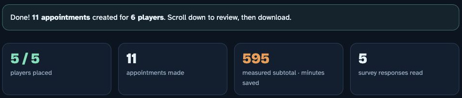
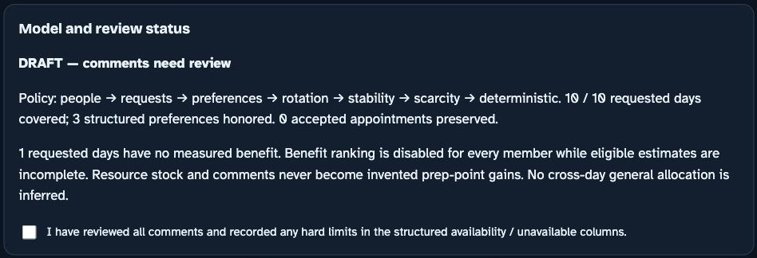
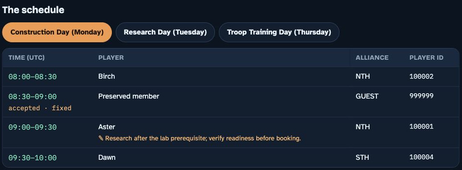
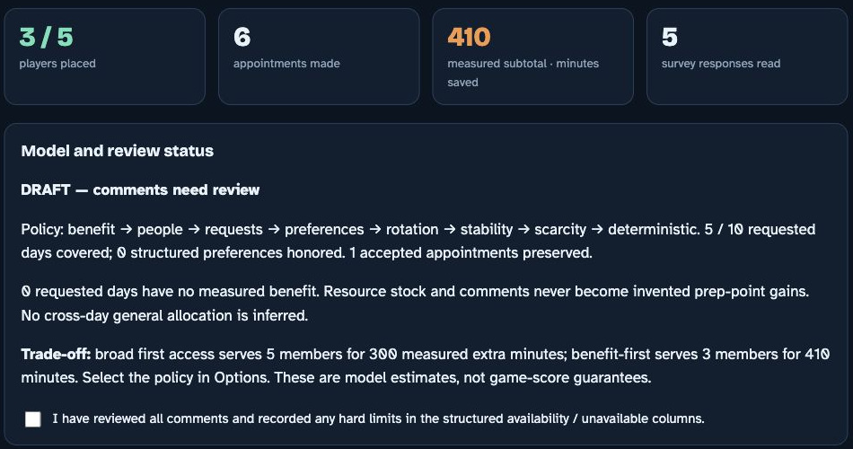
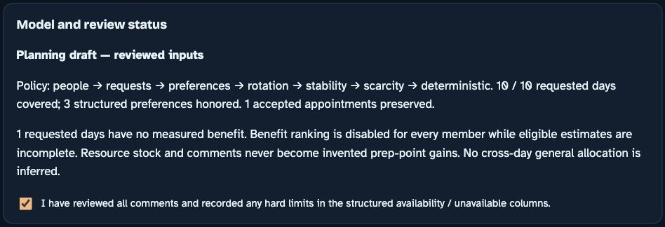

VERSION 4 / 26 OCTOBER 2026 / PROJECT CASE STUDY
Make appointment value and uncertainty visible
Whiteout Buff Scheduler v4 is a community planning tool for allocating temporary game offices. I developed its browser workflow, optimization tools and documentation around a distinction that changes the problem: resources a member owns are not the additional benefit an appointment creates.
By Christian Joudon. All illustrated players, times and estimates are synthetic.
A useful plan must respect both members and commitments.
The audience includes the community organizer using the tool and the technical reviewer who needs to understand its decisions without knowing the game.
The operating problem
Whiteout Survival communities coordinate temporary office titles during State versus State, or SvS, preparation. A buff is a temporary benefit relevant to an action such as starting construction, research or troop training. Members submit requested days and available times. An organizer needs to allocate scarce appointments, preserve promises already made and identify questions that still need human judgment.
My contribution
I developed the browser planner, the separate Python optimization and task calculation routes, synthetic examples and the explanations around them. The work connects input modeling, exact optimization, interface states, exported records and technical writing. The documentation is part of that system: it explains which decision belongs to the model and which remains with the organizer. It does not present a generated workbook as a game booking or claim observed community outcomes that the available evidence cannot establish.

Inventory is context, while benefit needs a baseline.
A member can contribute without holding a title. Treating all of that contribution as a title gain would answer the wrong question.
The conceptual correction
An inventory describes resources owned or intended for use. An appointment's incremental benefit is the difference between a declared plan with that title and the same plan without it. These are different quantities. A long new action may benefit even when the member uses no general speedups. Conversely, a large stock does not prove that an appointment produces a large extra gain.
The model boundary
The browser accepts explicit nonnegative whole minutes of additional saving for each requested day. It does not calculate these values from stock or allocate one general speedup pool across several days. Coupled work belongs in complete alternative plans in the advanced route. There, signed benefit values and an explicit baseline preserve cases in which a plan contributes without an appointment or loses value against the baseline. The unit and counterfactual remain visible rather than being hidden inside a score.
| Quantity | What it describes |
|---|---|
| Inventory | Resources owned or declared for use |
| No title baseline | What the same plan contributes without the requested title |
| Incremental benefit | The additional result compared with that baseline |
| Browser benefit minutes | Supplied nonnegative whole minutes of additional saving |
| Game event points | A separate quantity requiring the applicable scoring conditions |
Unknown estimates change the ranking for everyone.
Missing information should not become an invented zero, a wealth preference or a judgment about the member.
A visible fallback
The supplied survey deliberately leaves Elm's Research benefit blank. Under the default policy, incomplete eligible estimates disable benefit ranking globally. The planner still considers broad first access, requested day coverage, structured preferences and complete history. Members who supplied numbers do not gain a hidden advantage over members whose benefit remains unknown. Selecting the explicit benefit first policy instead produces a concrete missing estimate error.
Separate uncertainty from identity
Prior access history has its own completeness test. Unknown history disables rotation for everyone; a genuine zero is not the same as missing history. Resource stock is retained as context, not a reliability score or honesty penalty. These choices keep the system's treatment of uncertainty inspectable. They also change the writing: the interface explains the effective policy, while the guide explains why a measured subtotal can remain visible even though comparative benefit ranking is disabled.

A commitment is a constraint, not a tie preference.
The model distinguishes availability, preferred windows, accepted appointments and comments before optimizing anything.
Preserve the real boundary
The sample accepted file fixes Construction at 08:30 for a member absent from the survey. That external commitment occupies a seat and remains in the day sheet without earning invented benefit or survey coverage. A conflicting accepted seat or contradiction with a known member's availability stops the calculation with a specific reason. The solver does not quietly move a promise to improve its objective.
Make flexible choices where flexibility exists
Aster's short Construction exclusion removes the whole overlapping 30 minute seat. Structured preferred windows can influence ties but cannot overrule availability. Free text is retained for review rather than converted into a positive wish. A separate integration example demonstrates global reassignment: a flexible member can use 08:00 or 08:30, while a constrained member can use only 08:00. Giving the constrained member the early seat and moving the flexible one later serves both.

Exact optimization makes the chosen priorities explicit.
The browser solves the submitted three day model exactly. That does not mean one policy is the right choice for every community.
Encode the priority order
The browser uses a minimum cost flow network. Capacity limits encode appointment caps and one assignment per member and day. Eligible connections represent available seats, while fixed commitments remove occupied choices. Integer weights give each objective enough weight to dominate every lower priority combined. JavaScript BigInt keeps these layered weights exact rather than relying on floating point approximations.
Expose the consequence of the policy
Broad first access protects the number of members served before maximizing complete measured benefit. Benefit first reverses those two priorities. The team access route prioritizes coverage, requested days, preferences and complete history before any lower benefit layer. With complete estimates, the interface compares access and measured extra minutes so the organizer can see the consequence. Lower layers preserve draft stability and resolve remaining ties. The guarantee applies to the declared inputs and objective order, not unmodeled game behavior or the eventual score.
Show the actual comparison
The separate complete estimate variation changes Elm’s unknown value to a stated synthetic 25 minutes and narrows the window to 08:00 to 09:00. With the same fixed commitment, broad first access serves five survey members for 300 extra minutes; benefit first serves three for 410. These figures demonstrate the policy difference under declared inputs. They are not an observed benefit to a community or a forecast that the members will perform the work.

Review status remains visible through the export.
A successful calculation can still contain an unresolved input or a comment that needs judgment.
Use states that say what happened
The browser distinguishes input issues, unreviewed comments and reviewed inputs. A review checkbox cannot clear an input issue, and recalculation resets comment acknowledgment. Even the reviewed state remains a planning draft. This prevents one successful computational step from implying that a prerequisite has been verified or an appointment entered into the game.
Carry the distinction into the workbook
The export contains three day sheets, Summary, Declared resources and Scheduler notes. Draft filenames and notes preserve the review state. The names option changes day sheets and Summary but does not anonymize private notes, source comments or every identifier. Documentation therefore explains sharing by sheet purpose instead of promising blanket anonymity. It also states that initial loading uses external fonts and SheetJS, while selected survey processing stays local.

Separate models handle interactions the survey cannot represent.
The browser, advanced plan optimizer and mechanics calculator share concepts without pretending to be interchangeable interfaces.
Select complete event alternatives
The advanced Python optimizer uses OR-Tools CP-SAT to select one complete plan per member. Its JSON contract requires a baseline, one common integer benefit unit, physical office intervals, declared resource budgets and feasible alternatives. It checks supplied dependency order, member overlap, office overlap and locks. Six sequential objective stages must each be proved before OPTIMAL is reported. A deadline can instead produce FEASIBLE or UNKNOWN, and a missing dependency is disclosed rather than replaced with a silent heuristic.
Calculate only what the inputs support
The mechanics tool uses exact fractions for supplied same work timer comparisons and bounded fixed budget training. Timing context can gate a new start against an exact office interval. It does not infer live buff strengths, residual queues, repeated starts, collection windows or reinvestment. The integration example compiles supplied work comparisons into alternatives and records two synthetic members served with 1,600 additional timer seconds saved and zero general speedups consumed. The result illustrates the model connection, not a measured game outcome.
The guide follows the organizer's questions, not the source file layout.
The writing applies the complete technical communication study to reader purpose, conceptual precision, recovery and maintenance.
Keep one continuous example
The walkthrough follows the supplied five member survey and fixed external appointment through options, import, review and export. A separately labeled complete estimate variation demonstrates policy comparison without overwriting the unknown value in the original. Screenshots show real synthetic browser states. Captions explain their role, and exact control labels sit beside the relevant actions rather than in a distant legend.
Separate doing from understanding
The main route helps an organizer complete the task. Linked reference sections explain benefit, policies, ambiguous inputs and the separate Python tools. This case study preserves the reasoning behind the design instead of replacing it with a compressed presentation. Shared content is intended to produce companion web, Markdown and PDF editions consistently. The writing review checks conceptual accuracy, completeness, task focus, clarity, concreteness, tone, organization, retrieval and visual usefulness as separate questions.
The evidence supports tested behavior, not invented impact.
Documentation and independent release check date: 26 October 2026. Saved development records, current release checks and synthetic browser demonstrations are identified separately.
Distinguish the record from the rerun
The saved v4 development verification reports 23 targeted browser regressions, 300 independent exhaustive instances across three policies and a 120 member synthetic scale case. Independent release checks on 26 October 2026 reran the current suites: browser checks passed, the advanced suite ran 38 tests with 37 passes and one expected dependency specific skip, and all 25 mechanics tests passed. The integration rerun returned OPTIMAL for two synthetic members and 1,600 additional timer seconds with zero general speedups consumed.
Demonstrate the real interface with invented data
The documentation run loaded the actual five row sample, imported the external fixed appointment, reviewed the three days and comments, and downloaded a six sheet workbook. That workbook was reopened and inspected. The main result covered five survey members across ten requested days, preserved the external member and displayed a 595 minute measured subtotal with an unknown benefit still disclosed. The complete estimate comparison is a different, explicitly labeled variation.
Keep the remaining questions visible
Those checks do not establish representative user testing, accessibility conformance, community adoption, time savings or real event performance. Browser exactness is bounded by its additive survey model. Advanced exactness is bounded by supplied alternatives and feasibility assumptions. A new reader's navigation, interpretation and task performance still need direct observation. Future improvements should preserve the source, record the issue and update the interface explanation and companion documents together.